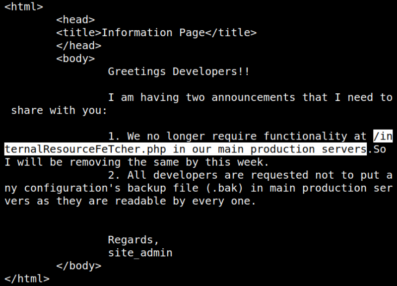
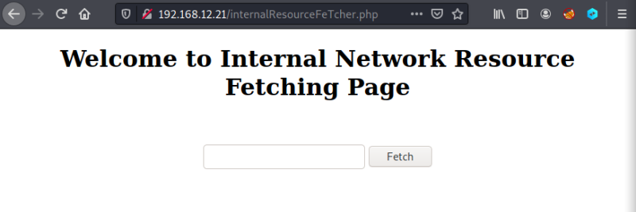

3.1.3 Internal Network Resource Fetching Page
1. Change the directory to “quiche/target/debug/examples”.
2. Run the following command.
$./http3-client https://192.168.12.21
Output:

3. Go to your browser and navigate to http://192.168.12.21/internalResourceFeTcher.php.
